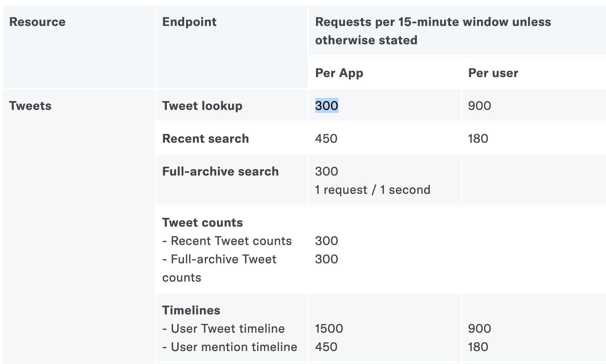

Introduction to working with APIs
An API (“Application Programming Interface”, you don’t need to remember that, no one does.) is a collection of commands you can issue over the internet to collect data from websites. Collecting this data is usually done over code, but you can also see this data by just visiting URLs in your browser.
This URL https://api.github.com/users/princeton-cdh/repos will list information about all the code under the CDH’s GitHub account. (If you’re in Firefox, click on the “Raw Data” button to see things more clearly.) This is JSON data like any other, and you could write a quick script to list out all the codebases we’ve worked on.
The power of this is that as long as you follow the formula above:
https://api.github.com/users/{USER}/repos
you can get the public code bases on any GitHub user. From that information we could then get a count of all issues on all the repositories so that we know how much work is left to do. GitHub is pretty complicated, but here’s a link to the API documentation.
If we didn’t have an API, to accomplish something similar we’d have to scrape the CDH’s profile page, which would be a lot harder. APIs store information in a clean, consistent way that makes it easy to collect information (for better and for worse.)
Wrappers
We will be working with tweepy a library that helps us to work with the API in python. This is an example of a wrapper. APIs are built to work with any language— all you need is an internet connection. But as we’ll see, it can be clumsy to work directly with the API, so programmers called API wrappers like tweepy to make their code cleaner and easier to use.
If you’re ever looking to work with an API, let’s take Reddit as an example, it’s worth googling “reddit api python wrapper”, and you’ll come across libraries that other people have used to connect to Reddit’s API. For python, I recommend praw.
Wrappers are simply supposed to simply make your life easier, but it’s possible that you’re going to work with APIs that don’t have wrappers in the language you need. The New York Times API, for example, doesn’t have a good python wrapper. If you make one, publish it online, and you can help other programers!
API Limitations
Rate limits are an important concept in order to work safely with APIs. When companies like Spotify or Twitter open up their servers to connect with other computers, they want to impose rules to make sure no one spams their servers or scrapes their entire database too quickly. When considering how to pursue a research question, keep “rate limiting” and “data limiting” in mind.
Rate limiting
Rate limits are kind of like speed limits imposed by an API. If Twitter allowed anybody to scrape every single tweet ever, it would place immense strain on their infrastructure (and since data is their main commodity, they can sell this access to corporations for a hefty price.)
Rate limits are documented here. We have created one app, so in each 15-minute window we can execute 300 searches.

Since each search contains a maximum of 200 tweets, we can get 60,000 tweets (!) in 15 minutes. When just starting out, rarely will one’s research questions reach the limit, but if you need a lot of data for your analysis, your scrape may take days to execute if the API’s rate limit is especially low. Smaller companies probably will have stronger limitations on how much data you can collect from their site. In the case of Facebook and TikTok, you can’t scrape data at all.
Data Limiting
As discussed previously, this data is highly valuable, and companies like Facebook have decided to cut off developers from accessing that data. Spotify won’t allow programmers to access counts of how long a song has been listened to (even though it’s available in their UI.) Twitter limits users to only the latest 3200 tweets when scraping a user’s timeline. You can only get the latest 100 retweets on a tweet which has led to problems in the past.
When pursuing a research question, make sure that the resources that you need to answer that question willl be fully included in the dataset you’re collecting otherwise you may be misinforming people.
Secret Keys
If someone has your public and private key, they can log in to the API and make it appear like you are abusing the rate limit or even post tweets as you (!). Never publish your private key anywhere.
Legal
I AM NOT A LAWYER, THIS IS NOT LEGAL ADVICE
As long as you’re using the API, you’re not doing anything illegal, but web scraping in general (say if I wrote a script to scrape all the email addresses from https://www.princeton.edu/) is quasi-illegal. We won’t go into how to scrape outside of APIs in these seminars, but consider that making thousands of requests to any website can cripple its infrastructure. This is called a Denial of Service Attack (DoS). So it’s best to follow best practices when collecting data outside the formal API process.
Ethics
Working with Twitter data most users know that Twitter is a public place, and anyone can see their tweets. Even better, working with Reddit, people are operating under the assumption of anonymity, so there are fewer ethical considerations.
But when you send a tweet, you may assume that it’s public, but how much control should you have after posting to a platform?
🤔 How would you feel if a tweet you wrote…
- …was included as an example in a book about internet culture?
- …was used to train a machine learning model to detect sarcasm?
- …included a picture that was used to train a facial recognition algorithm?
(All these are real-life examples.)
As you develop your research question, consider the ethical implications of collecting this data. If you scraped a user’s timeline, was this person a public figure? If you scraped all tweets that used a certain hashtag, how many people are you collecting data from? Did any of these people expect their data to be collected by a first years at Princeton?
Popular APIs
The Twitter API
General structure
Twitter is exceptional as a social media company because it gives researchers access to almost its entire site. Twitter allows you to access the following databases:
- Tweets
- Users
- Direct Messages
- Lists
- Trends
- Media
- Places
📚 Given these databases, what kind of questions could you ask?
What is a Twitter ID?
A Twitter ID is a unique identifier for each tweet. Having a unique ID is important for Twitter to store the thousands of tweets posted every second. If you have the ID of a tweet (perhaps from JSON data that you’ve scraped) and you want to see the original tweet in your browser, just follow this recipe:
https://twitter.com/{PROFILE}/status/{TWEET_ID}
# Example:
https://twitter.com/mattxiv/status/1368246126302945284
If you’d like, try to use this tweet ID 1116487177364365313 to find the original Tweet. Often, organizations like Documenting the Now will store tweet IDs only, and then researchers can “rehydrate” those IDs. Since there’s a limited time window to collect tweets during momentous occasions, you’re welcome to contribute to resources like these to preserve how people reacted online. Check out Documenting the Now’s catalog.
Existing datasets
Before scraping your own datasets, consider that other people may have had similar questions as you. Check out these sites before beginning your work to see if other researchers can save you time! People who create datasets want them to be put to good use, so they’ll try to share them as widely as possible.
- Wikipedia has a lot of tabular data you can draw from!
- Github is often used for code, but researchers will often post their datasets there as well
- Documenting the Now, as mentioned above, has a huge resource of tweets
- r/datasets contains a lot of datasets that people compiled for their research or for fun.